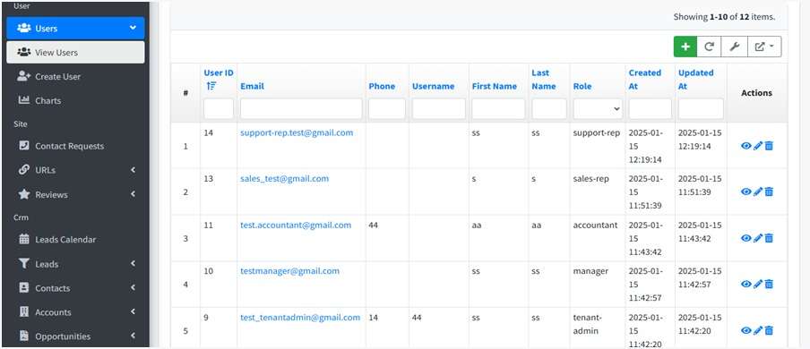
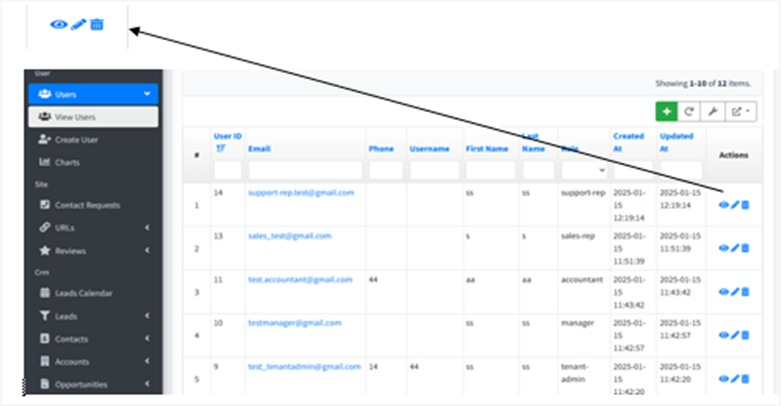
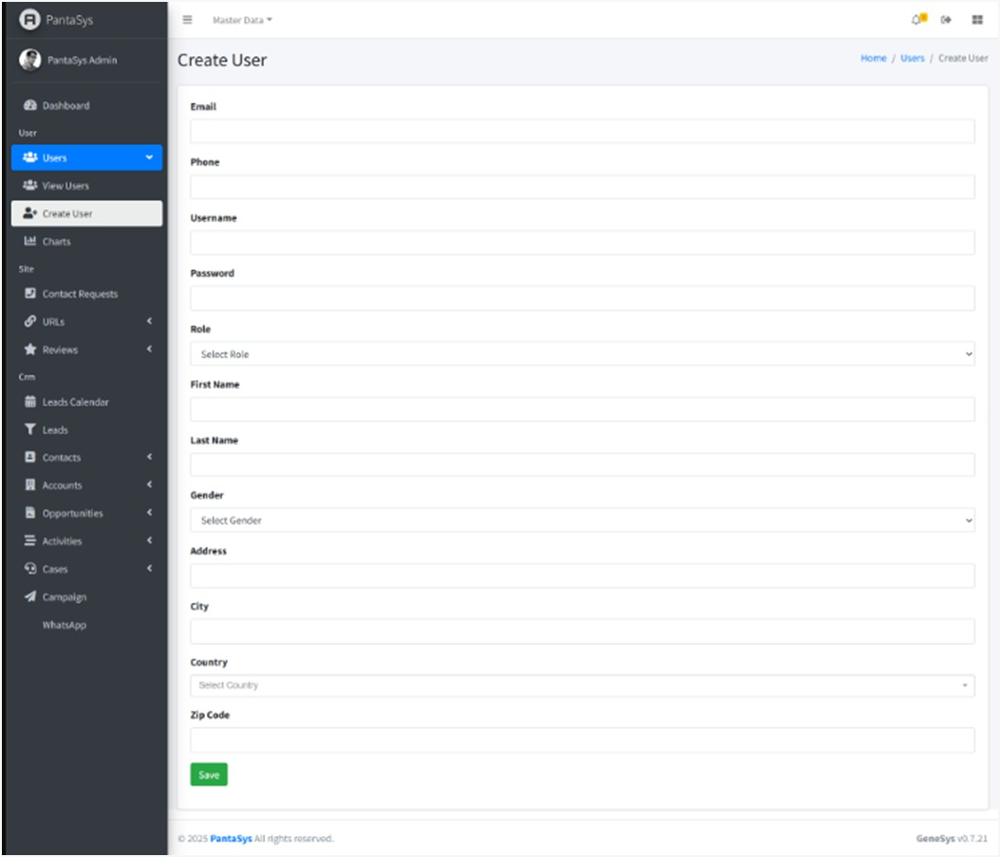
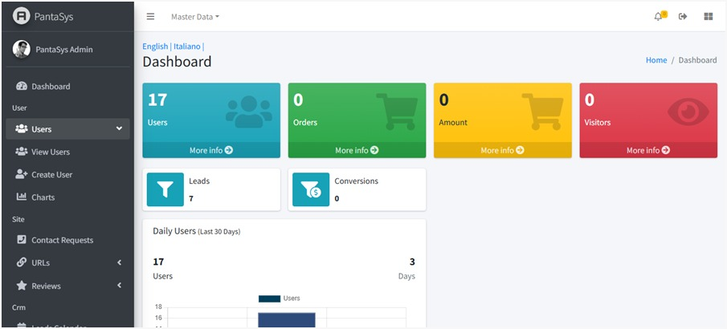
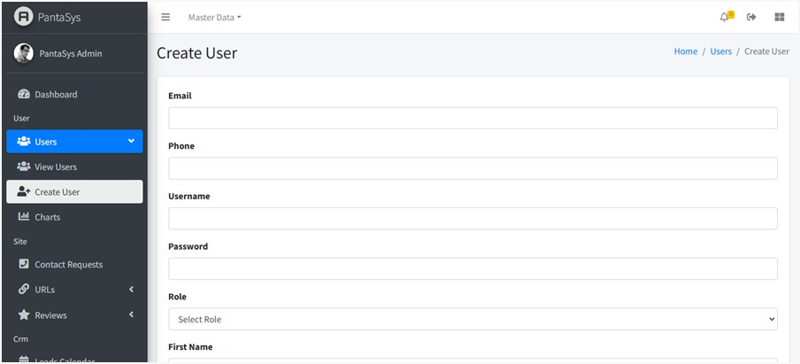

3. Users
Manage all user-related operations within the application. The Users function focuses on account management, enabling a user with sufficient role to control access, assign roles, and maintain user details.
The Users function focuses on user account management. A user with a sufficient role can:
Create User: Add new users with specific roles.
View Users: Display a list of users in a table format.
Update User: Modify user details and roles.
Delete User: Remove users from the system.
3.2 View All Users
The View Users page displays all saved users in a table format. The table includes the following columns:
{kind=link}
In the right-hand side in the user detail section, there is an Action field from where you can view, edit, and delete the details of a user.
{kind=link}
3.3 User Fields
{kind=link}
The following fields are available in the Create/Update User form:
Email
Enter the user’s valid email address.
Used for communication, notifications, and login.
Phone
Enter the user’s contact number.
Optional but useful for verification and communication.
Username
Create a unique username for the user.
May be required for login credentials.
Password
Set a secure password for the user’s account.
Should follow security standards (e.g., minimum 8 characters, mix of letters, numbers, and symbols).
Role
Select the user’s role from the dropdown menu.
Determines access permissions within PantaSys (e.g., Admin, Manager, Sales-rep).
{kind=link}
First Name
Enter the user’s first name.
Used for identification within the system.
Last Name
Enter the user’s last name.
Helps in differentiating users with similar first names.
Gender
Choose the user’s gender from the dropdown (e.g., Male, Female, Other).
Optional field.
{kind=link}
Address
Enter the user’s residential or work address.
Helps in profile verification.
City
Enter the city where the user is located.
Useful for regional data segmentation.
Country
Select the user’s country from the dropdown menu.
Helps in geographic-based data handling.
Zip Code
Enter the postal code for the user’s address.
Important for location accuracy.
Save Button: Click to save the user details and create a new account in the system.
3.4 Managing Users
Click on Users from the left menu bar to manage users.
{kind=link}
A user with a sufficient role can:
Create User
Navigate to the View Users page.
Click the Create User button.
Fill in the fields and click Save.
View User
Navigate to the View Users page.
Users are displayed in a table format with all relevant details.
Update User
On the View Users page, locate the user you want to modify.
Click the Edit button in the Actions column.
Make the necessary changes and click Save.
Delete User
On the View Users page, locate the user you want to delete.
Click the Delete button in the Actions column.
Confirm the deletion to remove the user.
3.4.1 Add User
Click Create User.
{kind=link}
3.4.1.1 Fill in User Details
Fill in the form with the fields as shown in the User Fields section. Once all the fields are filled in, click on the Save button. The system will create a new user account with the specified details.
3.4.2 View User
Click on the View icon to see the details of the user.
{kind=link}
3.4.3 Update User
Click on the Edit icon to modify the details of the user.
{kind=link}
3.4.4 Delete User
Click on the Delete icon to remove the user from the system.
{kind=link}